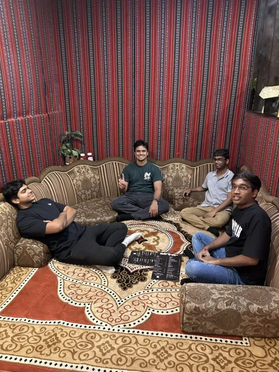
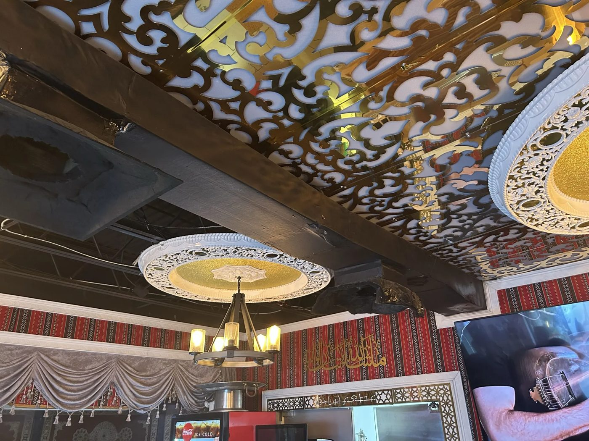

What is Khaleeji food?
"Khaleeji" means "of the Gulf." It describes the shared culture of the countries along the Arabian Gulf, including the United Arab Emirates, Saudi Arabia, Kuwait, Qatar, Bahrain, and Oman.
Our project focuses on Dubai and the wider Khaleeji region. Food here is built around sharing: large platters of spiced rice and meat placed in the center for everyone, coffee and dates offered to guests, and meals eaten together in the majlis, the traditional sitting room. Trade across the Gulf, the Indian Ocean, and the Arabian Peninsula has shaped this cuisine for centuries, which is why its flavors connect to so many other cultures.
On this blog, each of us shares our own reflections as we explore Khaleeji food in Tampa Bay and learn the stories behind it.

Restaurant Visit Reflections
Our group visited Abu Naji, a Yemeni restaurant in Tampa. Here is what each of us took away from it.

A Floor Seat at the Table: Our Visit to Abu Naji
Majlis seating, mild dips, and finally learning the difference between mandi and mabdi.
Kartheek's Reflection
Kartheek's take on the visit, including the chicken mabdi.

Sitting Low, Eating Together: Lunch at Abu Naji
How floor seating and shared platters changed the way we talked, and what a Yemeni meal in Tampa says about food crossing borders.
About Us
We are a group of USF students exploring how food tells the story of a culture. For our project we chose Dubai and the Khaleeji region, and this blog collects our research, our restaurant visits, and our final presentation.